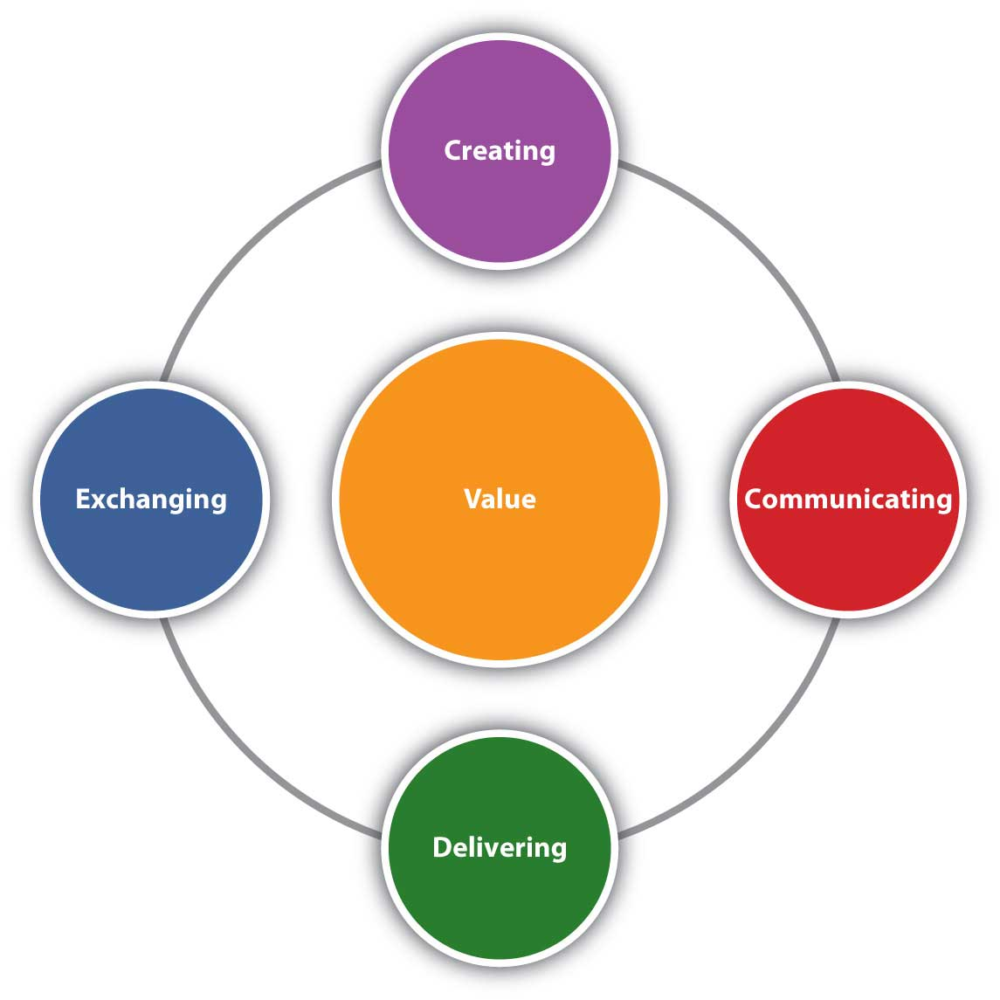
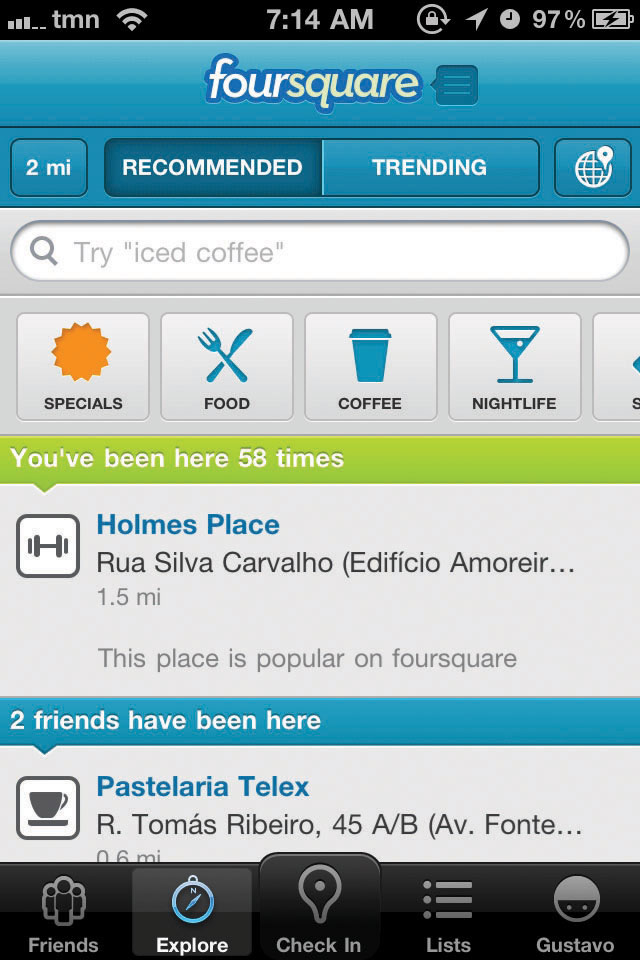

Marketing“The activity, set of institutions, and processes for creating, communicating, delivering, and exchanging offerings that have value for customers, clients, partners, and society at large.” is defined by the American Marketing Association as “the activity, set of institutions, and processes for creating, communicating, delivering, and exchanging offerings that have value for customers, clients, partners, and society at large.”American Marketing Association, “Definition of Marketing,” http://www.marketingpower.com/AboutAMA/Pages/DefinitionofMarketing.aspx?sq=definition+of+marketing (accessed December 3, 2009). If you read the definition closely, you see that there are four activities, or components, of marketing:
The traditional way of viewing the components of marketing is via the four Ps:
Introduced in the early 1950s, the four Ps were called the marketing mix, meaning that a marketing plan is a mix of these four components.
If the four Ps are the same as creating, communicating, delivering, and exchanging, you might be wondering why there was a change. The answer is that they are not exactly the same. Product, price, place, and promotion are nouns. As such, these words fail to capture all the activities of marketing. For example, exchanging requires mechanisms for a transaction, which consist of more than simply a price or place. Exchanging requires, among other things, the transfer of ownership. For example, when you buy a car, you sign documents that transfer the car’s title from the seller to you. That’s part of the exchange process.
Even the term product, which seems pretty obvious, is limited. Does the product include services that come with your new car purchase (such as free maintenance for a certain period of time on some models)? Or does the product mean only the car itself?
Finally, none of the four Ps describes particularly well what marketing people do. However, one of the goals of this book is to focus on exactly what it is that marketing professionals do.
Value is at the center of everything marketing does (Figure 1.1). What does value mean?
Figure 1.1
Marketing is composed of four activities centered on customer value: creating, communicating, delivering, and exchanging value.
When we use the term valueTotal sum of benefits received that meet a buyer’s needs. See personal value equation., we mean the benefits buyers receive that meet their needs. In other words, value is what the customer gets by purchasing and consuming a company’s offering. So, although the offering is created by the company, the value is determined by the customer.
Furthermore, our goal as marketers is to create a profitable exchange for consumers. By profitable, we mean that the consumer’s personal value equation is positive. The personal value equationThe net benefit a consumer receives from a product less the price paid for it and the hassle or effort expended to acquire it. is
value = benefits received – [price + hassle]Hassle is the time and effort the consumer puts into the shopping process. The equation is a personal one because how each consumer judges the benefits of a product will vary, as will the time and effort he or she puts into shopping. Value, then, varies for each consumer.
One way to think of value is to think of a meal in a restaurant. If you and three friends go to a restaurant and order the same dish, each of you will like it more or less depending on your own personal tastes. Yet the dish was exactly the same, priced the same, and served exactly the same way. Because your tastes varied, the benefits you received varied. Therefore the value varied for each of you. That’s why we call it a personal value equation.
Value varies from customer to customer based on each customer’s needs. The marketing conceptA philosophy underlying all that marketers do, driven by satisfying customer wants and needs., a philosophy underlying all that marketers do, requires that marketers seek to satisfy customer wants and needs. Firms operating with that philosophy are said to be market orientedThe degree to which a company follows the marketing concept.. At the same time, market-oriented firms recognize that exchange must be profitable for the company to be successful. A marketing orientation is not an excuse to fail to make profit.
Firms don’t always embrace the marketing concept and a market orientation. Beginning with the Industrial Revolution in the late 1800s, companies were production orientationA belief that the way to compete is a function of product innovation and reducing production costs, as good products appropriately priced sell themselves.. They believed that the best way to compete was by reducing production costs. In other words, companies thought that good products would sell themselves. Perhaps the best example of such a product was Henry Ford’s Model A automobile, the first product of his production line innovation. Ford’s production line made the automobile cheap and affordable for just about everyone. The production eraA period beginning with the Industrial Revolution and concluding in the 1920s in which production-orientation thinking dominated the way in which firms competed. lasted until the 1920s, when production-capacity growth began to outpace demand growth and new strategies were called for. There are, however, companies that still focus on production as the way to compete.
From the 1920s until after World War II, companies tended to be selling orientationA philosophy that products must be pushed through selling and advertising in order for a firm to compete successfully., meaning they believed it was necessary to push their products by heavily emphasizing advertising and selling. Consumers during the Great Depression and World War II did not have as much money, so the competition for their available dollars was stiff. The result was this push approach during the selling eraA period running from the 1920s to until after World War II in which the selling orientation dominated the way firms competed.. Companies like the Fuller Brush Company and Hoover Vacuum began selling door-to-door and the vacuum-cleaner salesman (they were always men) was created. Just as with production, some companies still operate with a push focus.
In the post–World War II environment, demand for goods increased as the economy soared. Some products, limited in supply during World War II, were now plentiful to the point of surplus. Companies believed that a way to compete was to create products different from the competition, so many focused on product innovation. This focus on product innovation is called the product orientationA philosophy that focuses on competing through product innovation.. Companies like Procter & Gamble created many products that served the same basic function but with a slight twist or difference in order to appeal to a different consumer, and as a result products proliferated. But as consumers had many choices available to them, companies had to find new ways to compete. Which products were best to create? Why create them? The answer was to create what customers wanted, leading to the development of the marketing concept. During this time, the marketing concept was developed, and from about 1950 to 1990, businesses operated in the marketing eraFrom 1950 to at least 1990 (see service-dominant logic era, value era, and one-to-one era), the dominant philosophy among businesses is the marketing concept..
So what era would you say we’re in now? Some call it the value eraFrom the 1990s to the present, some argue that firms moved into the value era, competing on the basis of value; others contend that the value era is simply an extension of the marketing era and is not a separate era.: a time when companies emphasize creating value for customers. Is that really different from the marketing era, in which the emphasis was on fulfilling the marketing concept? Maybe not. Others call today’s business environment the one-to-one eraFrom the 1990s to the present, the idea of competing by building relationships with customers one at a time and seeking to serve each customer’s needs individually., meaning that the way to compete is to build relationships with customers one at a time and seek to serve each customer’s needs individually. For example, the longer you are customer of Amazon, the more detail they gain in your purchasing habits and the better they can target you with offers of new products. With the advent of social media and the empowerment of consumers through ubiquitous information that includes consumer reviews, there is clearly greater emphasis on meeting customer needs. Yet is that substantially different from the marketing concept?
Still others argue that this is the time of service-dominant logicAn approach to business that recognizes that customers do not distinguish between the tangible and the intangible aspects of a good or service, but rather see a product in terms of its total value. and that we are in the service-dominant logic eraThe period from 1990 to the present in which some believe that the philosophy of service-dominant logic dominates the way firms compete.. Service-dominant logic is an approach to business that recognizes that consumers want value no matter how it is delivered, whether it’s via a product, a service, or a combination of the two. Although there is merit in this belief, there is also merit to the value approach and the one-to-one approach. As you will see throughout this book, all three are intertwined. Perhaps, then, the name for this era has yet to be devised.
Whatever era we’re in now, most historians would agree that defining and labeling it is difficult. Value and one-to-one are both natural extensions of the marketing concept, so we may still be in the marketing era. To make matters more confusing, not all companies adopt the philosophy of the era. For example, in the 1800s Singer and National Cash Register adopted strategies rooted in sales, so they operated in the selling era forty years before it existed. Some companies are still in the selling era. Recently, many considered automobile manufacturers to be in the trouble they were in because they work too hard to sell or push product and not hard enough on delivering value.
Marketing creates those goods and services that the company offers at a price to its customers or clients. That entire bundle consisting of the tangible good, the intangible service, and the price is the company’s offeringThe entire bundle of a tangible good, intangible service, and price that composes what a company offers to customers.. When you compare one car to another, for example, you can evaluate each of these dimensions—the tangible, the intangible, and the price—separately. However, you can’t buy one manufacturer’s car, another manufacturer’s service, and a third manufacturer’s price when you actually make a choice. Together, the three make up a single firm’s offer.
Marketing people do not create the offering alone. For example, when the iPad was created, Apple’s engineers were also involved in its design. Apple’s financial personnel had to review the costs of producing the offering and provide input on how it should be priced. Apple’s operations group needed to evaluate the manufacturing requirements the iPad would need. The company’s logistics managers had to evaluate the cost and timing of getting the offering to retailers and consumers. Apple’s dealers also likely provided input regarding the iPad’s service policies and warranty structure. Marketing, however, has the biggest responsibility because it is marketing’s responsibility to ensure that the new product delivers value.
CommunicatingIn marketing, a broad term meaning describing the offering and its value to potential customers, as well as learning from customers. is a broad term in marketing that means describing the offering and its value to your potential and current customers, as well as learning from customers what it is they want and like. Sometimes communicating means educating potential customers about the value of an offering, and sometimes it means simply making customers aware of where they can find a product. Communicating also means that customers get a chance to tell the company what they think. Today companies are finding that to be successful, they need a more interactive dialogue with their customers. For example, Comcast customer service representatives monitor Twitter. When they observe consumers tweeting problems with Comcast, the customer service reps will post resolutions to their problems. Similarly, JCPenney has created consumer groups that talk among themselves on JCPenney-monitored Web sites. The company might post questions, send samples, or engage in other activities designed to solicit feedback from customers.
Mobile devices, like iPads and Droid smartphones, make mobile marketing possible too. For example, if consumers check-in at a shopping mall on Foursquare or Facebook, stores in the mall can send coupons and other offers directly to their phones and pad computers.
Figure 1.2
A BMW X5 costs much more than a Honda CRV, but why is it worth more? What makes up the complete offering that creates such value?
Source: Wikimedia Commons.
Figure 1.3
Social media sites like Foursquare and Facebook have a location feature that allows consumers to post their location. Retailers can then use this to send coupons and other special offers to the consumer’s phone or pad for immediate use.
Source: Flickr.
Companies use many forms of communication, including advertising on the Web or television, on billboards or in magazines, through product placements in movies, and through salespeople. Other forms of communication include attempting to have news media cover the company’s actions (part of public relations [PR]), participating in special events such as the annual International Consumer Electronics Show in which Apple and other companies introduce their newest gadgets, and sponsoring special events like the Susan G. Komen Race for the Cure.
Marketing can’t just promise value, it also has to deliver value. DeliveringIn marketing, as in delivering value, a broad term that means getting the product to the consumer and making sure that the user gets the most out of the product and service. an offering that has value is much more than simply getting the product into the hands of the user; it is also making sure that the user understands how to get the most out of the product and is taken care of if he or she requires service later. Value is delivered in part through a company’s supply chain. The supply chainAll of the organizations that participate in the production, promotion, and delivery of a product or service from the producer to the end consumer. includes a number of organizations and functions that mine, make, assemble, or deliver materials and products from a manufacturer to consumers. The actual group of organizations can vary greatly from industry to industry, and include wholesalers, transportation companies, and retailers. LogisticsThe physical flow of materials in the supply chain., or the actual transportation and storage of materials and products, is the primary component of supply chain management, but there are other aspects of supply chain management that we will discuss later.
In addition to creating an offering, communicating its benefits to consumers, and delivering the offering, there is the actual transaction, or exchangeThe transaction of value, usually economic, between a buyer and seller., that has to occur. In most instances, we consider the exchange to be cash for products and services. However, if you were to fly to Louisville, Kentucky, for the Kentucky Derby, you could “pay” for your airline tickets using frequent-flier miles. You could also use Hilton Honors points to “pay” for your hotel, and cash back points on your Discover card to pay for meals. None of these transactions would actually require cash. Other exchanges, such as information about your preferences gathered through surveys, might not involve cash.
When consumers acquire, consume (use), and dispose of products and services, exchange occurs, including during the consumption phase. For example, via Apple’s “One-to-One” program, you can pay a yearly fee in exchange for additional periodic product training sessions with an Apple professional. So each time a training session occurs, another transaction takes place. A transaction also occurs when you are finished with a product. For example, you might sell your old iPhone to a friend, trade in a car, or ask the Salvation Army to pick up your old refrigerator.
Disposing of products has become an important ecological issue. Batteries and other components of cell phones, computers, and high-tech appliances can be very harmful to the environment, and many consumers don’t know how to dispose of these products properly. Some companies, such as Office Depot, have created recycling centers to which customers can take their old electronics.
Apple has a Web page where consumers can fill out a form, print it, and ship it along with their old cell phones and MP3 players to Apple. Apple then pulls out the materials that are recyclable and properly disposes of those that aren’t. By lessening the hassle associated with disposing of products, Office Depot and Apple add value to their product offerings.
The focus of marketing has changed from emphasizing the product, price, place, and promotion mix to one that emphasizes creating, communicating, delivering, and exchanging value. Value is a function of the benefits an individual receives and consists of the price the consumer paid and the time and effort the person expended making the purchase.